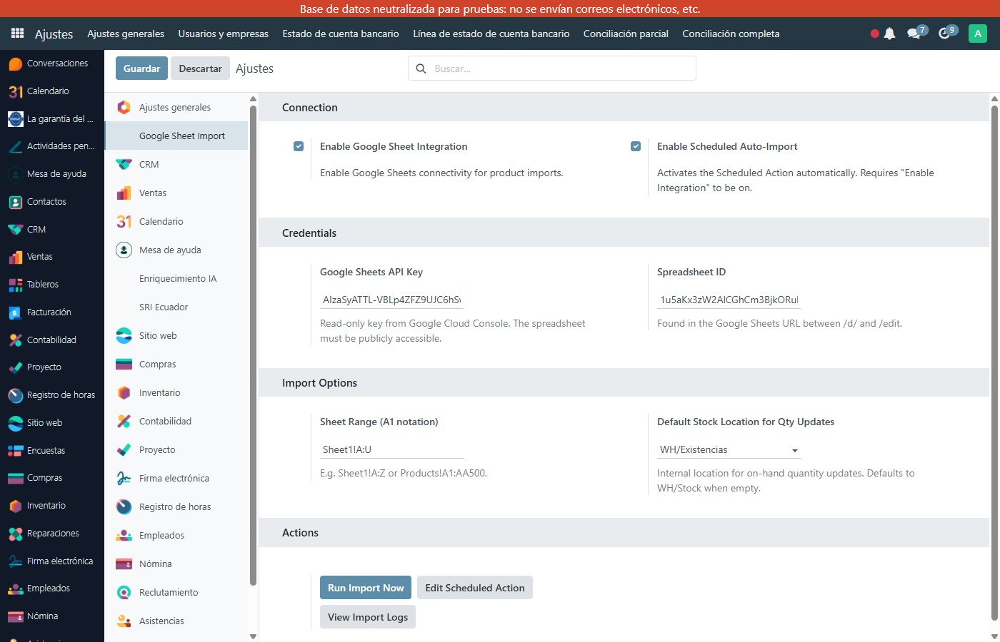

Capturas de pantalla
Configuración en Ajustes — API Key de Google, Spreadsheet ID, rango de celdas y opciones de sincronización automática

Lista de productos en Odoo 17 — importados y sincronizados automáticamente desde Google Sheets sin código

Importa y sincroniza productos, variantes y stock desde Google Sheets a Odoo 17 automáticamente. Crea, actualiza y archiva productos según tu hoja de cálculo — ideal para catálogos grandes gestionados en Google Sheets.
Conecta cualquier Google Sheet público con Odoo usando tu API Key de Google Cloud. El módulo lee las filas y crea o actualiza los productos automáticamente sin código.
Si un producto desaparece de la hoja, el módulo lo archiva en Odoo (active=False). Si reaparece, lo reactiva. Nunca elimina registros — solo archiva.
Crea y gestiona variantes (talla, color, capacidad, etc.) desde columnas de la hoja. Compatible con el sistema de variantes nativo de Odoo.
Crea la jerarquía completa de categorías desde la ruta en la hoja: 'Hardware / Servidores / HP' crea todos los niveles en Odoo si no existen.
Activa la importación automática programada para mantener tu catálogo Odoo siempre sincronizado con tu Google Sheet. Configura la frecuencia desde Ajustes.
Registro completo de cada importación: productos creados, actualizados, archivados, categorías creadas y errores. Auditoría completa del proceso de sincronización.
En Ajustes → Google Sheet Import, ingresa tu Google Sheets API Key y el ID de tu spreadsheet. La hoja debe ser pública o compartida.
Especifica el rango de celdas (ej. Sheet1!A:U) que contiene tus productos. Cada fila es un producto o variante a sincronizar.
Clic en 'Run Import Now' o activa el cron automático. Tu catálogo Odoo se mantiene sincronizado con Google Sheets automáticamente.
Configuración en Ajustes — API Key de Google, Spreadsheet ID, rango de celdas y opciones de sincronización automática
Lista de productos en Odoo 17 — importados y sincronizados automáticamente desde Google Sheets sin código